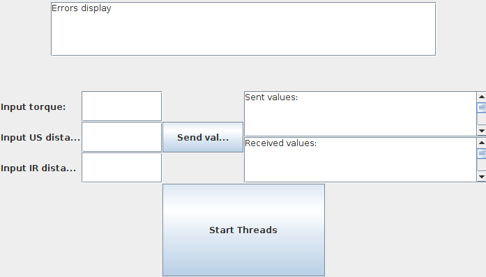
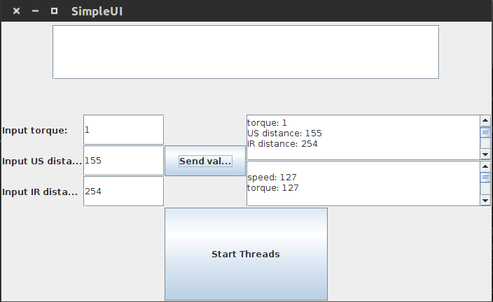
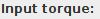
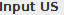
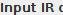

from sikuli import * ''' Methods to start and quit the GUI, insert values, and start threads, to be used in the test cases. ''' def startGUI(): ''' Method to start the GUI via terminal. This method only works on Linux. And keyboard layout must be set to US. Change the path to match your systems location of your java classes. ''' #start terminal keyDown(Key.CTRL+Key.ALT+"t") keyUp() wait(1) # change to correct path type("cd '/home/tobs/GitHub/TAV_Assignments/TAV Assignment1/bin'") type(Key.ENTER) # run GUI type("java SimpleUI") type(Key.ENTER) wait(1) # check that GUI has actually started try: find() except: print "ERROR: GUI did not start correctly" return print "GUI started correctly" return def quitGUI(): find(Pattern().similar(0.90)) click(Pattern().similar(0.90).targetOffset(-78,2)) return def enterVals(t, u, i): ''' Enter the values t, u, i into the respective boxes. Assumes the GUI is already running. ''' click(Pattern().similar(0.80).targetOffset(120,-1)) paste(str(t)) click(Pattern().similar(0.90).targetOffset(132,-1)) paste(str(u)) click(Pattern().similar(0.90).targetOffset(138,-1)) paste(str(i)) return def clearVals(): ''' Removes any values enterd for torque, US, or IR ''' click(Pattern().similar(0.80).targetOffset(120,-1)) type("a", KEY_CTRL) type(Key.BACKSPACE) click(Pattern().similar(0.90).targetOffset(132,-1)) type("a", KEY_CTRL) type(Key.BACKSPACE) click(Pattern().similar(0.90).targetOffset(138,-1)) type("a", KEY_CTRL) type(Key.BACKSPACE) return def startT(): click(Pattern().similar(0.90)) return #startGUI() #enterVals(1,2,3) #startT() #quitGUI()